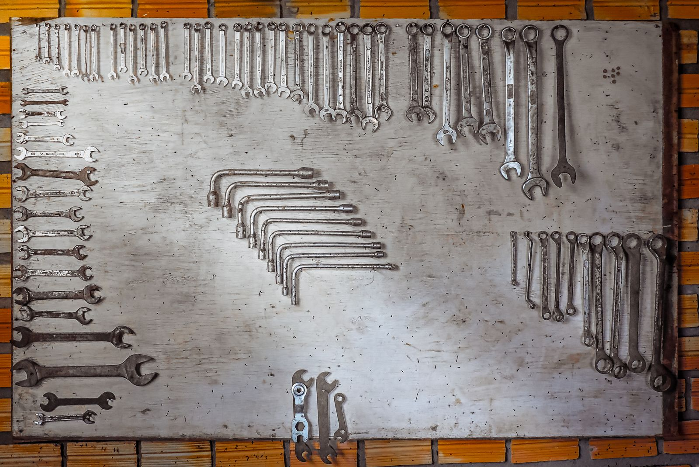

● Reboques e oficina · Murça
A oficina
Porquê a Leonel Brás
Mais de 15 anos em Murça.
- 01
Fiável
"Uma oficina multimarca muito fiável", escreve um cliente.
- 02
Tudo na mesma casa
Reboque, oficina, pneus e automóveis.
- 03
Também ao sábado
Aberto ao sábado de manhã.
25avaliações
2011ano de abertura